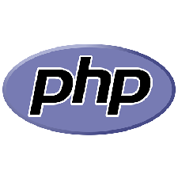
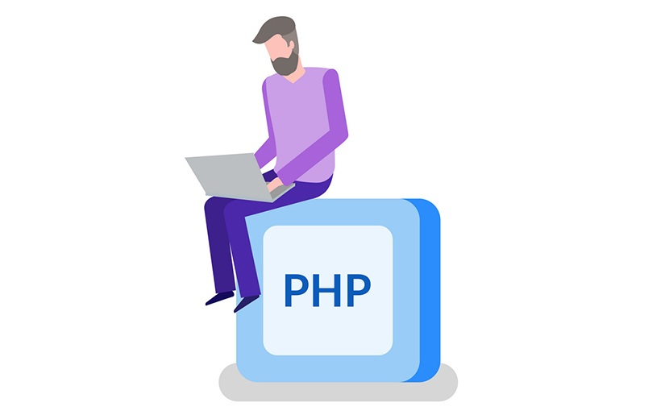
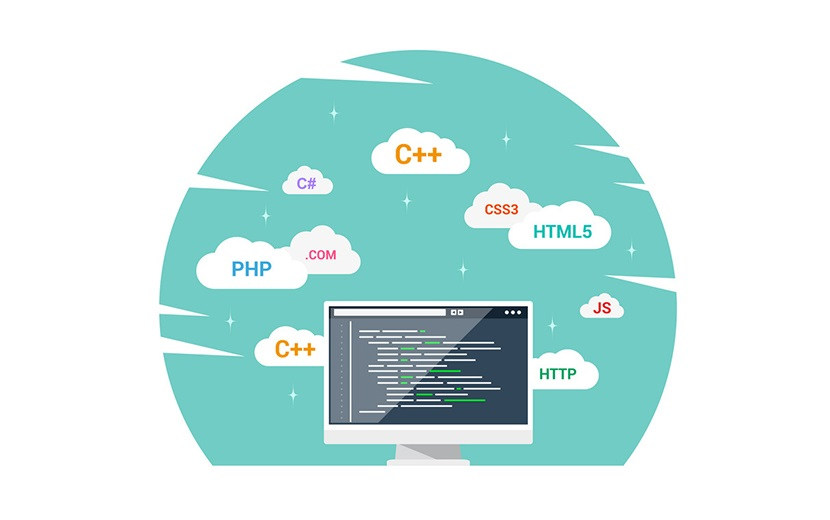

PHP
همان طور که میدانید طراحی سایت به دو قسمت سمت کاربر و سمت سرور تقسیم میشود. در این مقاله قصد داریم یکی از محبوبترین زبانهای برنامه نویسی سمت سرور را معرفی کنیم. این زبان که به نام php در میان برنامه نویسان معروف است، ویژگیهای مثبت زیادی را برای کاربران خود به ارمغان میآورد. با رشدانا همراه باشید تا به طور کامل دریابید که php چیست و چه ویژگیهایی دارد.
php چیست؟
php یک زبان برنامه نویسی سمت سرور و پردازشی است که کاربردهای گستردهای در زمینه تولید نرم افزارهای تحت وب و طراحی وبسایتها دارد. به بیانی دیگر ظاهر وبسایت توسط زبانهای html، CSS و… طراحی شده و بخش پردازشی آن به وسیله زبانهایی مانند php اجرا میگردد. برای اینکه به طور کامل درک کنید php چیست ، به این مثال توجه کنید. فرض کنید در یک فروشگاه آنلاین از یک محصول ۳ عدد خریداری کردهاید. در سبد خرید مجازی شما مشخصات این محصول و قیمت نهایی آن باید درج شود. به کمک کدهایی که با استفاده از زبان php نوشته میشود، میتوان قیمت محصول خریداری شده را از جدول پایگاه داده دریافت کرد. این کدها قیمت را ضربدر ۳ میکنند و حاصل ضرب را به همراه مشخصات محصول، تصویر آن و… توسط html در سبد خرید نشان میدهند.

با تاریخچه php آشنا شوید
تاریخچه این زبان برنامه نویسی به سال ۱۹۹۴ برمیگردد. در آن سال شخصی به نام Rasmus Lerdorf تعدادی اسکریپت به زبان C برنامه نویسی کرد. به مرور زمان و تشکیل یک تیم برنامه نویسی، اسکریپتها توسعه پیدا کردند و سرانجام زبان php در سال ۱۹۹۵ منتشر شد. این زبان برنامه نویسی در سال ۱۹۹۷ به نسخه ۳ ارتقا پیدا کرد. Php مخفف عبارت Hypertext Preprocessor به معنای پیش پردازندههای ابرمتن میباشد. منظور از ابرمتن همان متنهای طولانی شامل جداول، تصاویر و… هستند. دلیل نامگذاری Php این است که این زبان ابتدا باید اطلاعات را پردازش کند تا نتایج به صورت html به نمایش درآیند.
در سال ۲۰۰۴ نسخه ۵ این زبان با خاصیت شی گرایی طراحی شد که سبب تغییر و تحولات عظیم در این زبان گردید. در ادامه این تغییرات عظیم، در سال ۲۰۱۵ نسخه ۷ php قویتر از قبل و با سرعت بالای پردازش ایجاد شد. امروزه میلیونها توسعه دهنده با استفاده از نسخه ۷,۴ و… این زبان، به انجام پروژههای خود میپردازند.
کاربرد php چیست؟
Php یک زبان برنامه نویسی است که متخصصان این حوزه با استفاده از آن اقدام به ساخت صفحات داینامیک میکنند. با به کارگیری این زبان میتوان سایت و اپلیکیشنهای تحت وب فوق العادهای را برنامه نویسی کرد. اگر بخواهیم به صورت دقیقتر به پرسش کاربرد php چیست؟ پاسخ دهیم، باید به کارهای پشت صحنهای که با استفاده از این زبان انجام میشود، اشاره کرد. به عبارت دیگر، با استفاده از php قادر به تغییر ظاهر سایت نخواهید بود و کاربرد این زبان تنها در گرفتن اطلاعات مختلف از پایگاه داده و نشان دادن آنها به کاربر است.
برای اینکه به طور کامل با کاربرد این زبان برنامه نویسی آشنا شوید، توضیح مختصری درمورد سایت داینامیک و استاتیک، ارائه میدهیم. منظور از سایت داینامیک، خواندن اطلاعات و کل محتواهای صفحه از یک پایگاه داده و نمایش آن به کاربران است. در مقابل منظور از سایت استاتیک، نوشتن اخبار و محتواها به صورت دستی، در صفحات وب است.
برخی از سایتهایی که با استفاده از php ساخته شدهاند
سایتهای معروف زیادی با استفاده از php طراحی شدهاند. در ادامه لیستی از برخی سایتهای ایرانی و جهانی را معرفی میکنیم که با استفاده از php طراحی شدهاند.
- آپارات
- فیسبوک
- ویکی پدیا
- یاهو
- تامبلر
- سیستم مدیریت محتوای وردپرس
ویژگیهای php را بشناسید
اگر در حوزه برنامه نویسی فعالیت داشته باشید، ممکن است با سایر زبانهای سمت سرور مانند ASP.NET یا JSP آشنا باشید. اگر با سایر زبانها نظیر آنچه که نام برده شد، کار کرده باشید، بدون شک میدانید که چه چیزهایی پی اچ پی را از سایر رقبای خود متمایز میسازند. در ادامه به شرح مزایا و معایب این زبان برنامه نویسی میپردازیم.

مزایای php چیست؟
برخی از مزایای زبان php که سبب شده است بسیاری از برنامه نویسان به سراغ یادگیری آن روند، عبارتند از:
یادگیری آسان
یادگیری و استفاده از php بسیار راحت است. به همین دلیل بسیاری از برنامه نویسان مبتدی که هنوز نمی دانند برنامه نویسی چیست و تازه به حوزه برنامه نویسی ورود پیدا کردهاند، در ابتدا به سراغ یادگیری این زبان میروند.
Php زبانی منبع باز
زبان برنامه نویسی php یک زبان منبع باز یا (Open Source) است. معمولا زبانهای برنامه نویسی توسط جامعه جهانی گستردهای از توسعه دهندگان، توسعه یافته و نگهداری میشود. این زبانهای توسعه یافته به صورت آزاد در اختیار کاربران قرار میگیرد و نیاز به پرداخت هیچ هزینهای نیست.
قابلیت انتقال
پی اچ پی بر روی سیستم عاملهای مختلفی مانند مایکروسافت، ویندوز، لینوکس، سیستم عامل مک و… قابل اجرا است. همچنین این زبان با تمامی سرورهایی که امروزه مورد استفاده قرار میگیرند سازگار میباشد.
عملکرد سریع
اسکریپتهایی که با استفاده از زبان پی اچ پی نوشته میشوند، معمولا سریعتر از سایر زبانهای دیگر مانند ASP.NET یا JSP قابل اجرا هستند.
اجتماع گسترده
از آن جایی که زبان پی اچ پی توسط جامعه جهانی برنامه نویسان پشتیبانی میشود، یافتن مستندات و آموزشهای لازم به صورت آنلاین، بسیار راحت است.
معایب php چیست؟
در کنار تمامی مزایایی که php در اختیار کاربران خود میگذارد، اشکالاتی نیز بر آن وارد شده است که در ادامه این معایب را معرفی میکنیم. به یاد داشته باشید برای بهبود عملکرد، بهتر است قبل از اینکه به سراغ یادگیری یک زبان بروید، به خوبی با ویژگیهای آن آشنا شوید. معایب این زبان عبارتند از:
- php مناسب برنامههای تحت دسکتاپ نیست
- نسبت به سایر برنامهها کم و بیش آهستهتر اجرا میشود
- Php ممکن است باگهای امنیتی داشته باشد
- پردازش خطاها در php نسبت به زبانهای برنامه نویسی قدیمیتر است و حل آنها زمانبرتر است
- امنیت کمتر نسبت به net
با php چه میتوانیم بکنیم؟
- PHP توانایی ساخت صفحههای داینامیک را دارد.
- PHP توانایی ارسال اطلاعات از سرور، ویرایش اطلاعات و همچنین دریافت اطلاعات و هزاران کار دیگر را برای شما انجام دهد.
- PHP زبانی سازگار با html/css است که این ویژگی باعث دولوپ سایتهای مختلف با کمک این زبان میشود.
- با PHP شما میتوانید با Cookieها و Sessionها کار کنید.
- PHP با تعبیه توانایی رمزگذاری اطلاعات شما را در فضای وب از گزند هکر ها حفظ میکند.
- PHP سلطان ابزارهای تولید و ویرایش است! شما میتوانید فایل های txt, pdf, jpg و… تولید و ویرایش کنید و این یک امکان فوق العاده است که PHP در اختیار شما برای شما به وجود آورده است.
- شما میتواتنید صرفا با آموزش برنامه نویسی php دارای کسب و کار شوید.
فریمورکهای PHP را بشناسید
فریمورکها به منزله بستری برای ایجاد برنامههای وب PHP هستند. آنها از کتابخانههای کد برای توابع متداول استفاده میکنند و تعداد کدهای اصلی موردنیاز را کاهش میدهند. در حقیقت، چارچوبهایی که برای این زبان ساخته شدهاند، ساختار اساسی را برای سهولت توسعه برنامههای وب فراهم کرده و اغلب توسعهدهندگان نیز از آنها استفاده میکنند. در ادامه چند مورد از شناختهشدهترین و کارآمدترین آنها را معرفی خواهیم کرد.
لاراول Laravel
زمانی که صحبت از فریمورکهای PHP میشود، یکی از نامهایی که به ذهن هر توسعهدهندهای خطور میکند، لاراول است. این چارچوب به دلیل ساختار زیبایی که دارد، به شهرت رسیده که درک آن آسان و کار با آن بسیار لذتبخش است. با استفاده از Laravel میتوان با سرعت بیشتری پروژهها را انجام داد و تمرکز بیشتری بر روی آنها داشت. دسترسی به توابعی مانند: احراز هویت کاربر، مدیریت جلسهها و قابلیت کش، ازجمله مزایای استفاده از این فریمورک میباشند. به طور کلی، اگر در یک جمله بخواهیم در مورد کیفیت عملکرد این چارچوب صحبت کنیم، باید بگوییم که تمام عملکردهایی را که برای ساخت یک برنامه مدرن نیاز دارید، بستهبندی میکند.
همچنین بسیار راحت با کتابخانهها و سیستم عاملهای شخص ثالث مانند AWS ادغام میشود و این امکان را برای شما ایجاد میکند تا برنامههای گستردهتری بسازید. شما میتوانید برای کارهای طولانی، آنها را در صف قرار دهید تا در بکگراند به صورت همزمان اجرا نشوند و به بهبود عملکرد سایت کمک کنید.
Codelgniter
یکی دیگر از چارچوبهای PHP با نام Codelgniter شناخته میشود که از معماری mvc استفاده میکند. به بیانی دیگر، این فریمورک از مولفههای گوناگونی برای مدیریت امور خاص توسعه بهره میبرد. این شیوه، در بین توسعهدهندگان بسیار مورد پسند است؛ چراکه شما را قادر میسازد تا برنامههای وب مقیاسپذیرتری بسازید. اگر در زمینه کار با چارچوبهای این زبان تازهوارد هستید، انتخاب این مورد میتواند گزینه خوبی برای شما باشد. چراکه یادگیری و شروع کار با آن بسیار ساده است. همچنین این پلتفرم، اسناد فوقالعادهای دارد و به همین دلیل در یادگیری اصول اولیه مشکل چندانی نخواهید داشت.
Symfony
اگر مسابقهای برای انتخاب برترین چارچوب PHP وجود داشته باشد، بدون شک Symfony از نظر محبوبیت با دو موردی که در قسمتهای قبلی معرفی کردیم، در یک سطح است. زمانی که شروع به بررسی این فریمورک میکنید، خیلی راحت میتوانید به این قضیه پی ببرید. Symfony بسیار انعطافپذیر بوده و یک بسته نرمافزاری در اختیار شما میگذارد. منظور از بسته در اینجا این است که میتوانید عملکردهای PHP موردنیازتان را از آن انتخاب کنید یا خیلی راحت از کل چارچوب استفاده نمایید.
برای آنکه مطمئن شوید که برنامههایتان همانطور که میخواهید اجرا میشوند یا خیر، میتوانید از قابلیت تست داخلی آن استفاده کنید. با این وجود، براساس تجربه، برنامههایی که با استفاده از این پلتفرم ساخته میشوند، معمولا بهترین عملکرد را ندارند. همچنین، این چارچوب در مقایسه با گزینههایی که تا به حال دیدهایم، یک منحنی یادگیری شیبدار دارد.
Laminas Project
توسعهدهندگان معمولا از پروژههای Laminas که تا پیش از این تحت عنوان Zend بودند، به عنوان یک فریمورک glue یاد میکنند. این موضوع، راهی برای معرفی کردن ماهیت مبتنی بر glue نیز میباشد. Laminas یک چارچوب ساخته شده براساس MVC شیءگرا بوده که این امکان را برایتان فراهم میکند تا اجزای موردنظر خود را به عنوان کتابخانههای جداگانه بارگیری نمایید. به عبارتی دیگر، این فرصت را در اختیارتان قرار میدهد تا فقط بر روی اجزا و عملکردهای موردنظر خود تمرکز کرده و موارد دیگر را نادیده بگیرید. با استفاده از این رویکرد و ماهیت شیءگرایی آن، میتوانید کدی که مینویسید را بارها مورداستفاده قرار دهید. همچنین ادغام پلتفرم با کتابخانههای خارجی برای توسعه عملکرد نیز بسیار آسان است.
Phalcon
Phalcon یکی دیگر از فریمورکهای PHP است که به دلیل نوشته شدن کد منبع آن با زبان C کمی عجیب به نظر میرسد. به عبارتی دیگر، این چارچوب یک اکستنشن C از PHP است که در عمل، یکی از سریعترین فریمورکهایی است که میتوانید از کار کردن با آن لذت ببرید. همچنین از نظر منابع، بسیار کممصرف بوده و از معماری MVC استفاده میکند. پس از نصب این چارچوب، تقریبا هیچ فایلی دریافت نمیکنید و به جای آن، فقط ماژولها و کتابخانههای موردنیازتان را در صورت نیاز میتوانید اضافه کنید.
FuelPHP
این فریمورک یکی از موارد نسبتا جدیدی است که برای نخستین بار در سال ۲۰۱۴ راهاندازی شد. سازندگان آن بر این باورند که بهترین روشها را از سایر چارچوبهای قدرتمند جمعآوری کرده و چیزهای جدید و هیجانانگیزی در آن قرار دادهاند.
CakePHP
در اوایل دهه ۲۰۰۰ بود که CakePHP به عنوان اولین چارچوب MVC PHP وارد بازار شد. در آن دوره، این فریمورک یک گزینه بسیار عالی بود و هنوز هم یکی از محبوبترین چارچوبهای زبان PHP محسوب میشود. نسخههای جدید آن با گذر زمان بهبود پیدا کرده و اجزای جدید زیادی به آن اضافه شدند. با این وجود، CakePHP زمانی به درخشش واقعی خود میرسد که با نحوه استفاده از ساختار کدگذاری آن آشنا باشید. این بدان معنا است که با این پلتفرم، پس از تسلط بر مجموعه قراردادهای آن، میتوانید بر توسعه تمرکز کرده و کارهای بیشتری انجام دهید.
همچنین مجموعه شگفتانگیزی از کتابخانهها را ارائه میدهد که شامل Componentsهای بسیار مفیدی میشود. آزمایشات انجام شده ثابت کرده که این چارچوب یکی از مجموعههای کاملی است که میتوانید برای برنامهنویسی با PHP استفاده کنید. بنابراین اگر نیاز به اجرای ویژگیهای دشوار دارید، CakePHP گزینه بسیار خوبی برای شما خواهد بود.
Yii
یکی دیگر از فریمورکهای قدرتمند و برتر PHP، Yii است. یکی از ویژگیهای بارز آن، سهولت در تنظیم است و به همین دلیل توسعهدهندگان زیادی طرفدار آن هستند. همچنین دررابطه با عملکرد، این چارچوب در مقابل Phalcon قرار میگیرد و یک امتیاز بزرگی برای آن میباشد. مانند سایر چارچوبهایی که تا به حال دیدهاید، Yii هم مجموعه کاملی از اجزای سازنده را ارائه میکند تا بتوانید از آنها برای افزایش سرعت توسعه برنامههای وب استفاده کنید. علاوه بر این، به دلیل وجود مجموعه قدرتمندی از ویژگیهای امنیتی، Yii مشخصات برجستهای دارد که میتوان از آنها برای ساخت پروژههای بسیار ایمن استفاده کرد.
Slim
با استفاده از فریمورک Slim میتوان سرعت برنامههای وب و API را افزایش داد. علاوه بر مواردی که تا این قسمت از مطلب معرفی کردیم، سایر فریمورکهای PHP گزینههای زیر نیز هستند:
- Fat-Free Framework
- Lumen
یادگیری PHP به چه شکل است؟
یکی از بزرگترین مشکلاتی که در یادگیری این زبان وجود دارد این است که افراد تازهکار در این حوزه، نمیدانند که کارشان را باید از کجا شروع کنند و باید چگونه در این مسیر گام بردارند. در این زمینه، معمولا بهترین راهنمایی را میتوان از برنامهنویسان حرفهای به دست آورد. تجربیات آنها به کارآموزان کمک میکند تا از سردرگمی خارج شوند و به بهترین شکل، زبان PHP را بیاموزند. در ادامه، چند نکته مهم در رابطه با این موضوع را با شما در میان خواهیم گذاشت.
تعریف نیاز و اینکه چرا میخواهیم PHP بیاموزیم
در هر کاری، یکی از اصلیترین و ابتداییترین گامها، مشخص کردن هدف انجام آن است. زمانی که از هدف خود آگاه باشید، بدون شک اشتیاق بیشتری برای یادگیری خواهید داشت و میدانید که وقتتان را به بطالت نمیگذرانید. برای آنکه بتوانید در استفاده از این زبان، به یک فرد کاملا حرفهای تبدیل شوید، لازم است حداقل چند سال را صرف آن کنید. بنابراین بهتر است زمانی به صورت قطعی به سراغ یادگیری آن بروید که مطمئن شوید مسیر درستی را انتخاب کردهاید.
یادگیری مفاهیم اولیه برنامهنویسی
هر زبان برنامهنویسی، مجموعهای از اصول و مفاهیم پایه است. برای مثال، پیش از آنکه دستور for یا while را در PHP یاد بگیرید، بهتر است کمی با مفهوم حلقهها و محل کاربرد آنها آشنا شوید. البته معمولا کسانی که تا پیش از این با یک زبان دیگر برنامهنویسی میکردند، در این بخشها مشکلی ندارند و با سرعت بیشتری پیش میروند.
جمع بندی پایانی
همان طور که میدانید، طراحی وبسایت با استفاده از زبانهای سمت کاربر و سمت سرور صورت میپذیرد. یکی از معروفترین زبانهایی که برای کدنویسی سمت سرور استفاده میشود، زبان php است. این زبان ویژگیهای مشخصی دارد که برای انتخاب آن به عنوان زبان برنامه نویسی، باید به خوبی با آنها آشنا باشید. در این مقاله به طور کامل توضیح دادیم که php چیست و چه ویژگیهایی دارد.